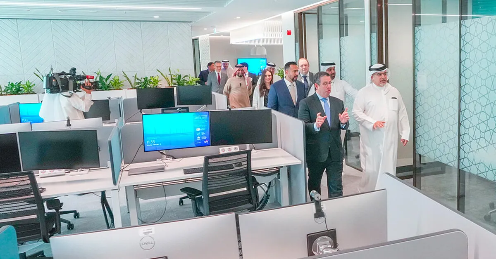

Banking on Tech Talent

15 December, 2023
When Citi sought programmers for its business-critical digital platform,
it turned to Bahrain
As the global financial system goes increasingly digital, banks are
embracing technological solutions to meet customer demand for seamless
and instant digital experiences. When banking behemoth Citi sought to
build out its flagship technology platform for institutional clients, it
turned to Bahrain, an Arabian Gulf island state that's been punching
above its weight in the technology labor market.
“The strongest draw was the labor market and the ability to find a
stream of educated people coming out of universities with the experience
we want,” says Michel Sawaya, CEO of Bahrain for Citi. “We also look at
the regulations and laws coming from the central bank, local labor laws,
the ease of doing business, the ease of getting expats into the country,
the overall infrastructure including communications and the rule of law.
Bahrain ticked the boxes on all these things.”
Entrusted With a Key Platform
Citi has had a presence in Bahrain for more than 50 years, with several
key regional roles based in the country and teams that support markets
across the bank's Middle East and Africa region. In 1996, Citi became
the first international institution to locally set up a separately
capitalized Islamic bank, Citi Islamic Investment Bank E.C. The
Bahrain-based bank offers Islamic financing and investments solutions to
clients across the globe.
In 2021, Citi chose Bahrain for its first global technology hub in the
Middle East and North Africa. Citi's global head of electronic platforms
called it “a huge endorsement of the talent and the caliber of people
that we've found here.”
The Bahrain hub works on one of the bank's major digital platforms, Citi
Velocity, a client portal that provides access to trading desk
commentary, data and market research. After a recent consolidation,
Velocity now includes the bank's electronic trading platform.
“Considering the number of trades that happen on Velocity every day, you
can only imagine how stable and safe it has to be, while being robust
and flexible to meet every client's needs,” Sawaya says.
Support for Proprietary Technology
The digitization of banking has caused big banks like Citi to hire
thousands of technology specialists, Sawaya says. “Like Citi
Velocity, many of our client interfaces, payment systems, trading
systems, internal risk systems and the like are proprietary. While
we use third-party providers for many systems, we still need to
develop, manage and handle safety for proprietary systems in-house.
That's why we need so many people, and we're always striving to find
locations where we can hire the right talent.”
The Bahrain team includes computer scientists, engineers and
cybersecurity experts who contribute to Velocity. Currently, the
team has 160 members, two-thirds of whom are Bahrainis and
one-quarter women. The goal is to hire 1,000 technologists within 10
years of the hub's founding.
The hub was set up in partnership with Tamkeen, Bahrain's labor
fund, which subsidizes Bahraini employees salaries depending on
experience level. Tamkeen has also supported several coders now at
the Citi hub in acquiring advanced certificates in programming.
(Bahrain ranked first in the Middle East and North Africa region for
employee training in the 2023 IMD World Talent Report.) The Bahrain
Economic Development Board has also been a staunch supporter of the
hub since its inception in 2021.
Along with the backing from the government of the Kingdom of
Bahrain, Citi also received support from local education providers.
Sawaya said institutes such as Bahrain Polytechnic and the
University of Bahrain produced many high-quality graduates, as
evidenced by their strong performance on coding tests used by the
bank globally in the recruitment process. Bahrain recently ranked
first among Gulf Cooperation Council countries in the proportion of
residents with advanced computer skills, according to the
International Telecommunication Union.
Bahrain's labor market is perfect for Citi's needs, says Citi
Bahrain CEO Michel Sawaya.
The Benefits of an Open Society
The Bahrainis at the hub have been joined by expatriates from India,
Russia, Ireland, the U.S. and elsewhere, many of them in a training
capacity. Sawaya, who was raised in Lebanon, says Bahrain is a very easy
place for expatriates to settle into. It's not just the affordable
housing, good schools and simple visa process, he says. It's also the
ease of working with their worldly Bahraini colleagues. (For the second
consecutive year Bahrain has ranked first globally in the Expat
Essentials Index by the expat support organization InterNations. The
index measures how easy it is for expats to settle into a country.)
“Bahrain has always been an open society,” a legacy of its history as a
trading hub within the Gulf, notes Sawaya. This openness helps to
explain Bahrain's strong educational institutions as well as its
openness to different cultures, he says.